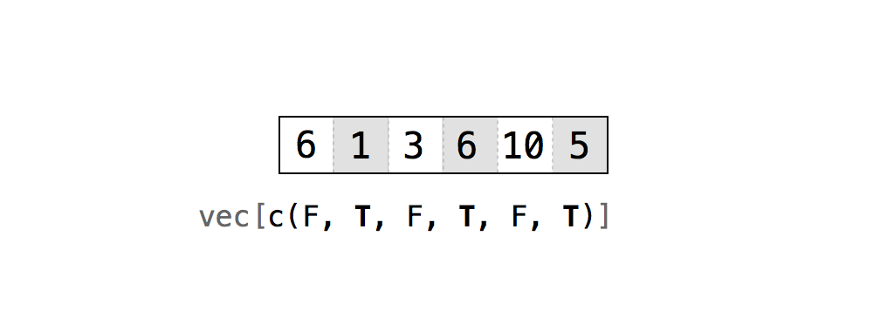
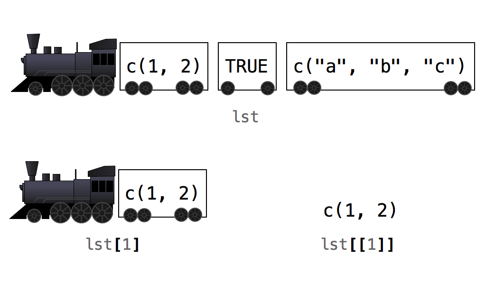

4 Notación de R
Ahora que tiene una baraja de cartas, necesita una forma de hacer: Primero, querrás una forma de barajar el mazo de vez en cuando. Y luego, querrás repartir cartas del mazo (una carta a la vez, cualquiera que sea la carta que esté arriba, no somos tramposos).
Para hacer estas cosas, deberá trabajar con los valores individuales dentro de su data frame, una tarea esencial para la ciencia de datos. Por ejemplo, para repartir una carta de la parte superior de su mazo, deberá escribir una función que seleccione la primera fila de valores en su data frame, como esta
repartir(mazo)
## cara palo valor
## rey picas 13Puede seleccionar valores dentro de un objeto de R con el sistema de notación de R.
4.1 Selección de Valores
R tiene un sistema de notación que le permite extraer valores de objetos de R. Para extraer un valor o un conjunto de valores de un data frame, escriba el nombre del data frame seguido de un par de corchetes:
mazo[ , ]Entre paréntesis irán dos índices separados por una coma. Los índices le dicen a R qué valores devolver. R usará el primer índice para crear un subconjunto de las filas del data frame y el segundo índice para crear un subconjunto de las columnas.
Tiene una opción cuando se trata de escribir índices. Hay seis formas diferentes de escribir un índice para R, y cada una hace algo ligeramente diferente. Todas son muy simples y bastante prácticas, así que echemos un vistazo a cada una de ellas. Puede crear índices con:
- Enteros positivos
- Enteros negativos
- Cero
- Espacios en blanco
- Valores lógicos
- Nombres
La forma más simple de escribir índices es la de los números enteros positivos.
4.1.1 Números Enteros Positivos
R trata los enteros positivos como la notación ij en álgebra lineal: mazo[i,j] devolverá el valor de mazo que está en la iésima fila y la jésima columna, Figura Figura 4.1. Tenga en cuenta que i y j solo necesitan ser números enteros en el sentido matemático. Se pueden guardar como números en R
head(mazo)
## cara palo valor
## rey picas 13
## reina picas 12
## jota picas 11
## diez picas 10
## nueve picas 9
## ocho picas 8
mazo[1, 1]
## "rey"Para extraer más de un valor, utilice un vector de enteros positivos. Por ejemplo, puedes devolver la primera fila de mazo con mazo[1, c(1, 2, 3)] o mazo[1, 1:3]:
mazo[1, c(1, 2, 3)]
## cara palo valor
## rey picas 13R devolverá los valores de mazo que están tanto en la primera fila como en la primera, segunda y tercera columna. Tenga en cuenta que R en realidad no eliminará estos valores de mazo. R le dará un nuevo conjunto de valores que son copias de los valores originales. Luego puede guardar este nuevo conjunto en un objeto de R con el operador de asignación de R:
nuevo <- mazo[1, c(1, 2, 3)]
nuevo
## cara palo valor
## rey picas 13Repetición
Si repite un número en su índice, R devolverá los valores correspondientes más de una vez en su “subconjunto”. Este código devolverá la primera fila de mazo dos veces:
mazo[c(1, 1), c(1, 2, 3)]
## cara palo valor
## rey picas 13
## rey picas 13El sistema de notación de R no se limita a tramas de datos. Puede usar la misma sintaxis para seleccionar valores en cualquier objeto de R, siempre que proporcione un índice para cada dimensión del objeto. Entonces, por ejemplo, puede crear un subconjunto de un vector (que tiene una dimensión) con un solo índice:
vec <- c(6, 1, 3, 6, 10, 5)
vec[1:3]
## 6 1 3La indexación comienza en 1
En algunos lenguajes de programación, la indexación comienza con 0. Esto significa que 0 devuelve el primer elemento de un vector, 1 devuelve el segundo elemento y así sucesivamente.
Este no es el caso con R. La indexación en R se comporta como la indexación en álgebra lineal. El primer elemento siempre está indexado por 1. ¿Por qué R es diferente? Tal vez porque fue escrito para matemáticos. Aquellos de nosotros que aprendimos a indexar en un curso de álgebra lineal nos preguntamos por qué los programadores de computadoras comienzan con 0.
drop = FALSE
Si selecciona dos o más columnas de un data frame, R devolverá un nuevo data frame:
mazo[1:2, 1:2]
## cara palo
## rey picas
## reina picasSin embargo, si selecciona una sola columna, R devolverá un vector:
mazo[1:2, 1]
## "rey" "reina"Si prefiere un data frame, puede agregar el argumento opcional drop = FALSE entre corchetes:
mazo[1:2, 1, drop = FALSE]
## cara
## rey
## reinaEste método también funciona para seleccionar una sola columna de una matriz o arreglo.
4.1.2 Números Enteros Negativos
Los enteros negativos hacen exactamente lo contrario de los enteros positivos al indexar. R devolverá todos los elementos excepto los elementos en un índice negativo. Por ejemplo, mazo[-1, 1:3] devolverá todo menos la primera fila de mazo. mazo[-(2:52), 1:3] devolverá la primera fila (y excluirá todo lo demás):
mazo[-(2:52), 1:3]
## cara palo valor
## rey picas 13Los enteros negativos son una forma más eficaz de crear subconjuntos que los enteros positivos si desea incluir la mayoría de las filas o columnas de un data frame.
R devolverá un error si intenta emparejar un entero negativo con un entero positivo en el mismo índice:
mazo[c(-1, 1), 1]
## Error in xj[i] : only 0's may be mixed with negative subscriptsSin embargo, puede usar enteros negativos y positivos para crear subconjuntos de un objeto si los usa en índices diferentes (por ejemplo, si usa uno en el índice de filas y otro en el índice de columnas, como mazo[-1, 1]) .
4.1.3 Cero
¿Qué pasaría si usaras el cero como índice? El cero no es ni un entero positivo ni un entero negativo, pero R aún lo usará para hacer un tipo de subconjunto. R no devolverá nada de una dimensión cuando use cero como índice. Esto crea un objeto vacío:
mazo[0, 0]
## data frame with 0 columns and 0 rowsPara ser honesto, la indexación con cero no es muy útil.
4.1.4 Espacios en Blanco
Puede usar un espacio en blanco para decirle a R que extraiga todos los valores en una dimensión. Esto le permite crear subconjuntos de un objeto en una dimensión pero no en las otras, lo cual es útil para extraer filas o columnas enteras de un data frame:
mazo[1, ]
## cara palo valor
## rey picas 134.1.5 Valores Lógicos
Si proporciona un vector de TRUE y FALSE como su índice, R hará coincidir cada TRUE y FALSE con una fila en su data frame (o una columna dependiendo de dónde coloque el índice). R luego devolverá cada fila que corresponda a un TRUE, Figura Figura 4.2.
Puede ser útil imaginar a R leyendo el data frame y preguntando: “¿Debería devolver la _i_ésima fila de la estructura de datos?” y luego consultando el valor _i_ésimo del índice para su respuesta. Para que este sistema funcione, su vector debe ser tan largo como la dimensión que está tratando de dividir en subconjuntos:
mazo[1, c(TRUE, TRUE, FALSE)]
## cara palo
## rey picas
filas <- c(TRUE, F, F, F, F, F, F, F, F, F, F, F, F, F, F, F,
F, F, F, F, F, F, F, F, F, F, F, F, F, F, F, F, F, F, F, F, F, F,
F, F, F, F, F, F, F, F, F, F, F, F, F, F)
mazo[filas, ]
## cara palo valor
## rey picas 13

Este sistema puede parecer extraño, ¿quién quiere escribir tantos TRUE y FALSE?, pero se volverá muy poderoso en Modificación de Valores.
4.1.6 Nombres
Finalmente, puede solicitar los elementos que desee por nombre, si su objeto tiene nombres (consulte Nombres). Esta es una forma común de extraer las columnas de un data frame, ya que las columnas casi siempre tienen nombres:
mazo[1, c("cara", "palo", "valor")]
## cara palo valor
## rey picas 13
# toda la columna de valor
mazo[ , "valor"]
## 13 12 11 10 9 8 7 6 5 4 3 2 1 13 12 11 10 9 8
## 7 6 5 4 3 2 1 13 12 11 10 9 8 7 6 5 4 3 2
## 1 13 12 11 10 9 8 7 6 5 4 3 2 14.2 Repartir una Carta
Ahora que conoce los conceptos básicos del sistema de notación de R, pongámoslo en práctica.
Ejercicio 6.1 (Repartir una Carta) Complete el siguiente código para crear una función que devuelva la primera fila de un data frame:
repartir <- function(cartas) {
# ?
}Solución. Puede usar cualquiera de los sistemas que devuelven la primera fila de su data frame para escribir una función de repartir. Usaré enteros positivos y espacios en blanco porque creo que son fáciles de entender:
repartir <- function(cartas) {
cartas[1, ]
}La función hace exactamente lo que quieres: reparte la carta superior de tu conjunto de datos. Sin embargo, la función se vuelve menos impresionante si ejecuta `repartir`` una y otra vez:
repartir(mazo)
## cara palo valor
## rey picas 13
repartir(mazo)
## cara palo valor
## rey picas 13
repartir(mazo)
## cara palo valor
## rey picas 13repartir siempre devuelve el rey de picas porque mazo no sabe que hemos repartido la carta. Por lo tanto, el rey de picas se queda donde está, en la parte superior de la baraja, listo para ser repartido nuevamente. Este es un problema difícil de resolver, y lo trataremos en Entornos. Mientras tanto, puedes solucionar el problema barajando tu mazo después de cada vez que repartes. Entonces una nueva tarjeta siempre estará en la parte superior.
Barajar es un compromiso temporal: las probabilidades en juego en su mazo no coincidirán con las probabilidades que ocurren cuando juega un juego con un solo mazo de cartas. Por ejemplo, seguirá existiendo la probabilidad de que el rey de picas aparezca dos veces seguidas. Sin embargo, las cosas no son tan malas como pueden parecer. La mayoría de los casinos usan cinco o seis mazos a la vez en los juegos de cartas para evitar el conteo de cartas. Las probabilidades que encontraría en esas situaciones son muy parecidas a las que crearemos aquí.
4.3 Barajar el Mazo
Cuando barajas una baraja de cartas real, reorganizas aleatoriamente el orden de las cartas. En su mazo virtual, cada carta es una fila en un data frame. Para barajar el mazo, debe reordenar aleatoriamente las filas en el data frame. Se puede hacer esto? ¡Apuesta! Y ya sabes todo lo que necesitas para hacerlo.
Esto puede sonar tonto, pero comience extrayendo cada fila en su data frame:
mazo2 <- mazo[1:52, ]
head(mazo2)
## cara palo valor
## rey picas 13
## reina picas 12
## jota picas 11
## diez picas 10
## nueve picas 9
## ocho picas 8¿Qué obtienes? Un nuevo data frame cuyo orden no ha cambiado en absoluto. ¿Qué pasa si le pides a R que extraiga las filas en un orden diferente? Por ejemplo, podría pedir la fila 2, luego la fila 1 y luego el resto de las tarjetas:
mazo3 <- mazo[c(2, 1, 3:52), ]
head(mazo3)
## cara palo valor
## reina picas 12
## rey picas 13
## jota picas 11
## diez picas 10
## nueve picas 9
## ocho picas 8R cumple. Obtendrá todas las filas de vuelta, y vendrán en el orden que las pida. Si desea que las filas aparezcan en un orden aleatorio, debe ordenar los números enteros del 1 al 52 en un orden aleatorio y usar los resultados como un índice de fila. ¿Cómo podrías generar una colección tan aleatoria de enteros? Con nuestra amigable función vecinal sample:
aleatorio <- sample(1:52, size = 52)
aleatorio
## 35 28 39 9 18 29 26 45 47 48 23 22 21 16 32 38 1 15 20
## 11 2 4 14 49 34 25 8 6 10 41 46 17 33 5 7 44 3 27
## 50 12 51 40 52 24 19 13 42 37 43 36 31 30
mazo4 <- mazo[aleatorio, ]
head(mazo4)
## cara palo valor
## cinco diamantes 5
## reina diamantes 12
## as diamantes 1
## cinco picas 5
## nueve trevoles 9
## jota diamantes 11Ahora el nuevo conjunto está verdaderamente barajado. Terminará una vez que ajuste estos pasos en una función.
Ejercicio 6.2 (Barajar el Mazo) Usa las ideas anteriores para escribir una función barajar. barajar debe tomar un data frame y devolver una copia aleatoria del data frame.
Solución. Su función barajar se verá como la siguiente:
barajar <- function(cartas) {
aleatorio <- sample(1:52, size = 52)
cartas[aleatorio, ]
}¡Buen trabajo! Ahora puedes barajar tus cartas entre cada vez que reparte:
repartir(mazo)
## cara palo valor
## rey picas 13
mazo2 <- barajar(mazo)
repartir(mazo2)
## cara palo valor
## jota treboles 114.4 Signos de Dólar y Corchetes Dobles
Dos tipos de objetos en R obedecen a un segundo sistema opcional de notación. Puede extraer valores de data frame y listas con la sintaxis $. Encontrará la sintaxis $ una y otra vez como programador de R, así que examinemos cómo funciona.
Para seleccionar una columna de un data frame, escriba el nombre del data frame y el nombre de la columna separados por un $. Tenga en cuenta que no se deben colocar comillas alrededor del nombre de la columna:
mazo$valor
## 13 12 11 10 9 8 7 6 5 4 3 2 1 13 12 11 10 9 8 7
## 6 5 4 3 2 1 13 12 11 10 9 8 7 6 5 4 3 2 1 13
## 12 11 10 9 8 7 6 5 4 3 2 1R devolverá todos los valores de la columna como un vector. Esta notación $ es increíblemente útil porque a menudo almacenará las variables de sus conjuntos de datos como columnas en un data frame.De vez en cuando, querrá ejecutar una función como mean o median en los valores de una variable. En R, estas funciones esperan un vector de valores como entrada, y mazo$valor entrega tus datos en el formato correcto:
Puede usar la misma notación $ con los elementos de una lista, si tienen nombres. Esta notación también tiene una ventaja con las listas. Si crea subconjuntos de una lista de la manera habitual, R devolverá una lista nueva que tiene los elementos que solicitó. Esto es cierto incluso si solo solicita un solo elemento.
Para ver esto, haz una lista:
lst <- list(numeros = c(1, 2), logicos = TRUE, caracteres = c("a", "b", "c"))
lst
## $numeros
## [1] 1 2
## $logicos
## [1] TRUE
## $caracteres
## [1] "a" "b" "c"Y luego obten el subconjunto:
lst[1]
## $numeros
## [1] 1 2El resultado es una lista más pequeña con un elemento. Ese elemento es el vector c(1, 2). Esto puede resultar molesto porque muchas funciones de R no funcionan con listas. Por ejemplo, sum(lst[1]) devolverá un error. Sería horrible si una vez que almacena un vector en una lista, solo pudiera recuperarlo como una lista:
sum(lst[1])
## Error in sum(lst[1]) : invalid 'type' (list) of argumentCuando usa la notación $, R devolverá los valores seleccionados tal como son, sin una estructura de lista a su alrededor:
lst$numeros
## 1 2Luego puede enviar inmediatamente los resultados a una función:
sum(lst$numeros)
## 3Si los elementos de su lista no tienen nombres (o no desea usar los nombres), puede usar dos corchetes, en lugar de uno, para crear un subconjunto de la lista. Esta notación hará lo mismo que la notación $:
lst[[1]]
## 1 2En otras palabras, si crea un subconjunto de una lista con notación de corchete único, R devolverá una lista más pequeña. Si crea un subconjunto de una lista con notación de corchetes dobles, R devolverá solo los valores que estaban dentro de un elemento de la lista. Puede combinar esta función con cualquiera de los métodos de indexación de R:
lst["numeros"]
## $numeros
## [1] 1 2
lst[["numeros"]]
## 1 2Esta diferencia es sutil pero importante. En la comunidad de R, hay una forma popular y útil de pensar en ello, Figure Figura 4.3. Imagina que cada lista es un tren y cada elemento es un vagón de tren. Cuando usa corchetes individuales, R selecciona vagones de tren individuales y los devuelve como un tren nuevo. Cada vagón mantiene su contenido, pero ese contenido todavía está dentro de un vagón de tren (es decir, una lista). Cuando usa corchetes dobles, R en realidad descarga el automóvil y le devuelve el contenido.

Nunca use attach
En los primeros días de R, se hizo popular usar attach() en un conjunto de datos una vez que lo tenía cargado. ¡No hagas esto! attach recrea un entorno informático similar a los utilizados en otras aplicaciones estadísticas como Stata y SPSS, que gustaron a los usuarios cruzados. Sin embargo, R no es Stata o SPSS. R está optimizado para usar el entorno informático de R, y ejecutar attach() puede causar confusión con algunas funciones de R.
¿Qué hace attach()? En la superficie, attach te ahorra escribir. Si adjunta el conjunto de datos mazo, puede hacer referencia a cada una de sus variables por nombre; en lugar de escribir mazo$cara, puedes simplemente escribir cara. Pero escribir no está mal. Te da la oportunidad de ser explícito, y en la programación de computadoras, explícito es bueno. Adjuntar un conjunto de datos crea la posibilidad de que R confunda dos nombres de variables. Si esto ocurre dentro de una función, es probable que obtenga resultados inutilizables y un mensaje de error inútil para explicar lo que sucedió.
Ahora que es un experto en recuperar valores almacenados en R, resumamos lo que ha logrado.
4.5 Resumen
Ha aprendido a acceder a los valores que se han almacenado en R. Puede recuperar una copia de los valores que viven dentro de un data frame y usar las copias para nuevos cálculos.
De hecho, puede usar el sistema de notación de R para acceder a valores en cualquier objeto R. Para usarlo, escriba el nombre de un objeto seguido de corchetes e índices. Si su objeto es unidimensional, como un vector, solo necesita proporcionar un índice. Si es bidimensional, como un data frame, debe proporcionar dos índices separados por una coma. Y, si es n-dimensional, debe proporcionar n índices, cada uno separado por una coma.
En Modificación de Valores, llevará este sistema un paso más allá y aprenderá a cambiar los valores reales que se almacenan dentro de su data frame. Todo esto se suma a algo especial: control completo de sus datos. Ahora puede almacenar sus datos en su computadora, recuperar valores individuales a voluntad y usar su computadora para realizar cálculos correctos con esos valores.
¿Suena esto básico? Puede serlo, pero también es poderoso y esencial para una ciencia de datos eficiente. Ya no necesitas memorizar todo en tu cabeza, ni preocuparte por hacer mal el cálculo mental. Este control de bajo nivel sobre sus datos también es un requisito previo para programas de R más eficientes, el tema del Proyecto 3: Máquina Tragamonedas.